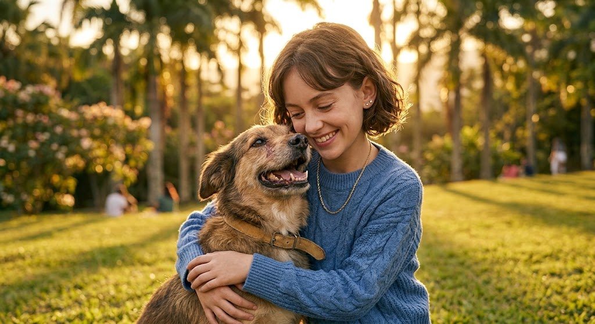
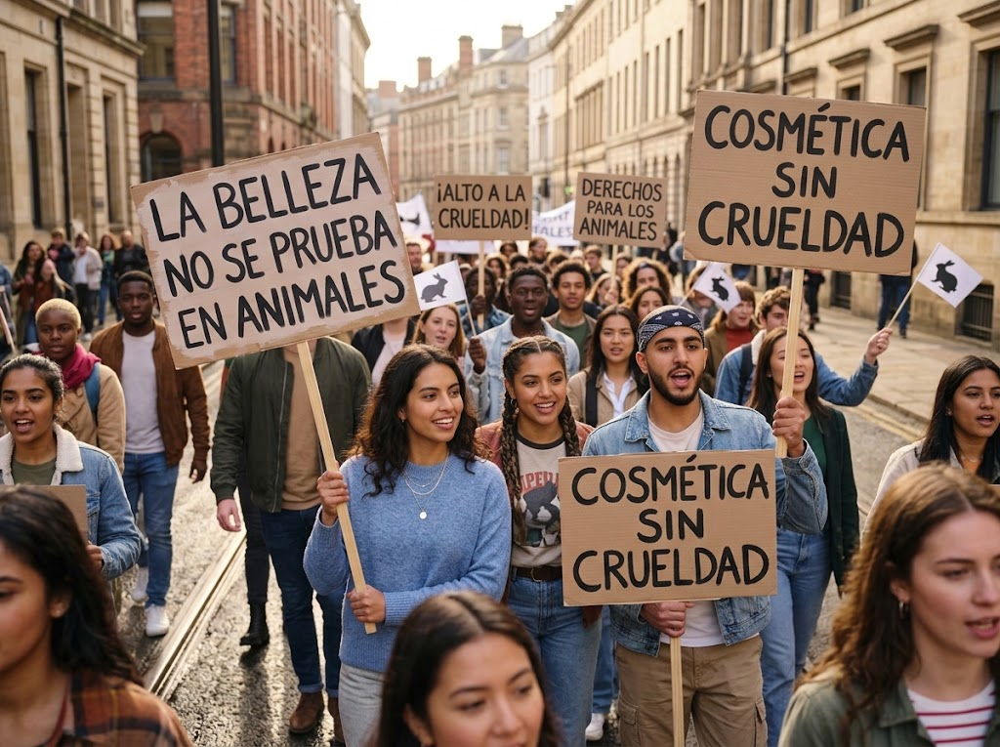
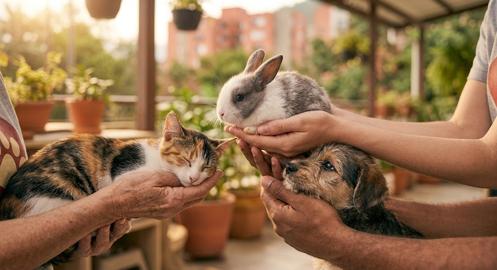
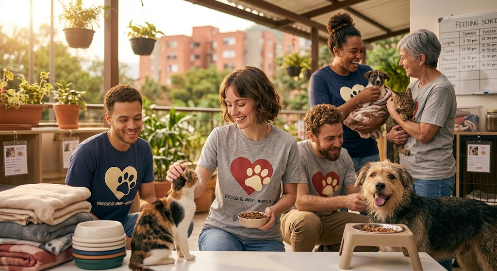
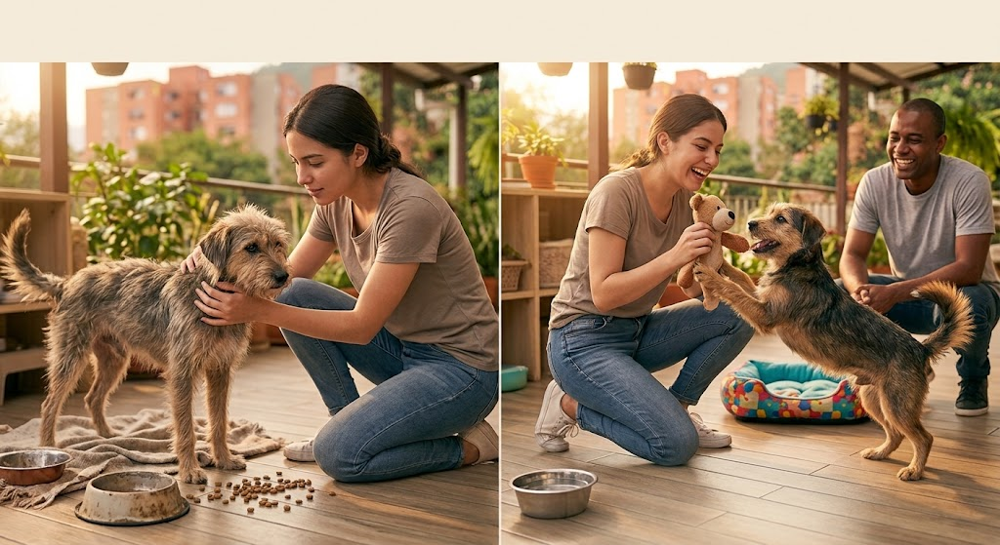

"La verdadera belleza no necesita hacer sufrir a nadie"

"Ser conscientes de nuestros actos es la base de una belleza responsable"

"Elegir productos cruelty-free también es un acto de amor hacia los animales"

"La belleza no es solo apariencia, sino también compasión y respeto por la vida"

"La verdadera belleza se encuentra escondida en las manos que ayudan a rescatar"

"Al rescatar un animal no solo cambias su vida, sin querer también cambias la tuya"
BELLA CAUSA
Belleza al rescate
¡Bienvenido a Bella Causa!
Descubre cómo puedes ayudar a las mascotas que más lo necesitan y marcar una diferencia en sus vidas.
Al mismo tiempo, disfruta de contenido sobre belleza y cuidado personal, aprende nuevos consejos y
diviértete mientras apoyas una causa llena de amor y esperanza.
En Bella causa creemos que la verdadera belleza nace cuando hacemos el bien. Aquí
conectamos la pasión por la belleza con el rescate animal, inspirando a miles de personas a conocer,
compartir y apoyar historias que merecen una segunda oportunidad. Juntos construimos una comunidad
donde cada acción, por pequeña que parezca, puede cambiar una vida.
¿Cómo funciona? En Bella Causa promovemos marcas y hábitos de belleza
cruelty-free (libres de crueldad animal) mientras damos visibilidad gratuita a refugios
independientes. Al aprender sobre cuidado consciente y compartir nuestras historias, nos ayudas
a conectar a cientos de mascotas rescatadas con familias amorosas y donantes.
Adopta una Mascota
Explora nuestras mascotas disponibles para adopción y encuentra a tu nuevo mejor amigo.
Tips y consejos para cuidarte por fuera, sin dejar de cuidar tu belleza interna
Cuidado Facial
Rutina facial básica en 3 pasos
Descubre cómo mantener tu piel saludable y radiante con una rutina facial sencilla y efectiva.
Una rutina facial no necesita ser complicada para ser efectiva. Con solo tres pasos constantes,
tu piel puede lucir más sana y equilibrada.
1. Limpieza: lava tu rostro dos veces al día (mañana y noche) con un limpiador suave, acorde a
tu tipo de piel. Esto retira el exceso de grasa, la contaminación y los residuos de maquillaje
sin resecar.
2. Hidratación: aplica una crema hidratante todos los días, incluso si tienes piel grasa. La
hidratación ayuda a mantener la barrera natural de la piel y previene que produzca más grasa
para compensar la sequedad.
3. Protección solar: usa protector solar todas las mañanas, haga sol o esté nublado. Es el paso
más importante para prevenir el envejecimiento prematuro y manchas.
La clave no está en usar muchos productos, sino en ser constante con estos tres pasos.
Cuidado Corporal
Hidratación corporal de cabeza a pies
Descubre los secretos para mantener tu piel hidratada y suave en todas las áreas del cuerpo.
La piel del cuerpo también necesita cuidado, no solo el rostro. Aquí algunos consejos simples:
Elige según tu tipo de piel: si tienes piel seca, busca cremas con manteca de karité o aceites
naturales. Si tienes piel grasa o mixta, opta por lociones más ligeras, en gel o de rápida
absorción.
El mejor momento para hidratar: justo después de ducharte, cuando la piel todavía está un poco
húmeda. Esto ayuda a "sellar" la humedad y la crema se absorbe mejor.
No olvides zonas como codos, rodillas y talones, que suelen resecarse más rápido que el resto
del cuerpo.
La constancia importa más que el producto: aplicar una crema sencilla todos los días da mejores
resultados que usar una crema cara solo de vez en cuando.
Outfits
Qué ponerte según el clima
Ideas de outfits cómodos y con estilo para cada clima sin perder tu esencia.
Vestirse bien según el clima no significa sacrificar el estilo. Aquí algunas ideas:
Días fríos: apuesta por capas. Una camiseta básica, un suéter de punto y una chaqueta encima te
permiten quitarte o ponerte ropa según cambie la temperatura durante el día. Los colores tierra
y neutros siempre combinan bien entre sí.
Días lluviosos: prioriza materiales que no se dañen con el agua, como impermeables o chaquetas
resistentes, y calzado cerrado y antideslizante. Un buen paraguas de color llamativo también le
da un toque de personalidad al outfit.
Días soleados: telas livianas como algodón o lino ayudan a mantenerte fresca. No olvides un
sombrero o gorra, y gafas de sol que combinen con tu look.
Un buen outfit empieza por sentirte cómoda; el estilo llega solo cuando estás a gusto con lo que
llevas puesto.
Maquillaje
Maquillaje natural para el día a día
Un paso a paso sencillo para lucir fresca y radiante sin pasar horas frente al espejo.
No necesitas una rutina de maquillaje larga para verte bien todos los días. Con estos pasos
básicos es suficiente:
1. Base ligera: usa una base o BB cream de cobertura ligera, que unifique el tono sin sentirse
pesada.
2. Corrector: aplica solo donde lo necesites, como ojeras o alguna imperfección puntual, y
difumina bien con los dedos o una esponjita.
3. Rubor: un toque de rubor en las mejillas da un aspecto saludable y fresco de inmediato.
4. Máscara de pestañas: un par de capas abren la mirada sin necesidad de usar sombras ni
delineador.
5. Labios: un bálsamo con color o un labial en tono natural termina el look de forma sencilla.
Todo este proceso puede tomar menos de 10 minutos, ideal para el día a día.
Cuidado Capilar
Tips para un cabello saludable y hermoso
Consejos simples para fortalecer tu cabello y mantenerlo brillante sin maltratarlo.
Un cabello sano empieza con hábitos simples y constantes:
No te laves el cabello todos los días: lavarlo en exceso puede resecarlo. Para la mayoría de los
tipos de cabello, es suficiente lavarlo cada 2 o 3 días.
Usa agua tibia, no caliente: el agua muy caliente reseca el cuero cabelludo y debilita el
cabello con el tiempo.
Reduce el calor: planchas y secadores a alta temperatura dañan la fibra capilar. Si los usas,
aplica antes un protector térmico.
Corta las puntas regularmente: un corte cada 2 o 3 meses evita que las puntas abiertas suban y
dañen más cabello.
Cuida también desde adentro: una buena alimentación e hidratación con agua se reflejan
directamente en la salud de tu cabello.
Galería de Belleza
Cuidado facial
Cuidado corporal
Outfits
Maquillaje
Cuidado capilar
Únete a Nuestra Comunidad
¿Quieres adoptar, ser voluntario, postular una fundación o recibir nuestros consejos cruelty-free?
Déjanos tus datos y nos pondremos en contacto contigo.
¡Gracias por unirte a Bella Causa! 🐾
Hemos recibido tu mensaje correctamente. Muy pronto nuestro equipo se comunicará contigo.